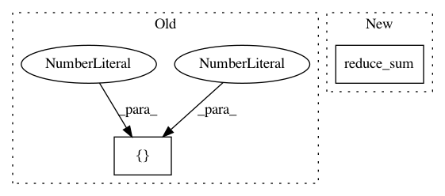

f08653c95fbbff7db73244b97839caf10883a7ff,openrec/modules/interactions/ns_eu_dist.py,NSEuDist,_build_training_graph,#NSEuDist#,39
Before Change
reduction_indices=1,
keep_dims=True, name="l2_user_pos")
l2_user_neg = tf.reshape(tf.reduce_sum(tf.square(tf.subtract(tmp_user, self._n_item)),
reduction_indices=[1, 2], name="l2_user_neg"), [-1,1])
pos_score = l2_user_pos + self._p_item_bias
neg_score = l2_user_neg + tf.reduce_sum(self._n_item_bias, reduction_indices=[1, 2])
self._loss = tf.reduce_sum(self._weights * tf.maximum(self._margin*self._neg_num + pos_score*self._neg_num - neg_score, 0))
After Change
reduction_indices=2,
name="l2_user_neg")
pos_score = l2_user_pos + tf.tile(self._p_item_bias, [1, self._neg_num]) // shape=(2000, self._neg_num)
neg_score = l2_user_neg + tf.reduce_sum(self._n_item_bias, reduction_indices=2) // shape=(2000, self._neg_num)
self._loss = tf.reduce_sum(self._weights * tf.maximum(self._margin + pos_score - neg_score, 0))
def _build_serving_graph(self):
In pattern: SUPERPATTERN
Frequency: 3
Non-data size: 2
Instances
Project Name: ylongqi/openrec
Commit Name: f08653c95fbbff7db73244b97839caf10883a7ff
Time: 2018-03-27
Author: tonyxuan26@foxmail.com
File Name: openrec/modules/interactions/ns_eu_dist.py
Class Name: NSEuDist
Method Name: _build_training_graph
Project Name: calico/basenji
Commit Name: ea60242913a0ce53f4e033fee3be1f55e2ceb7b0
Time: 2021-02-14
Author: drk@calicolabs.com
File Name: basenji/metrics.py
Class Name: R2
Method Name: update_state
Project Name: calico/basenji
Commit Name: ea60242913a0ce53f4e033fee3be1f55e2ceb7b0
Time: 2021-02-14
Author: drk@calicolabs.com
File Name: basenji/metrics.py
Class Name: PearsonR
Method Name: update_state